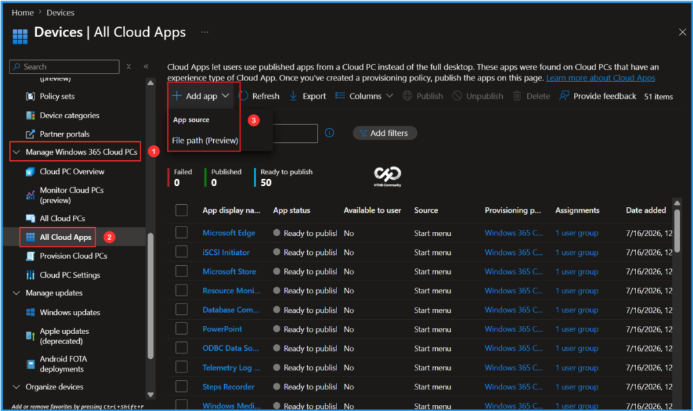
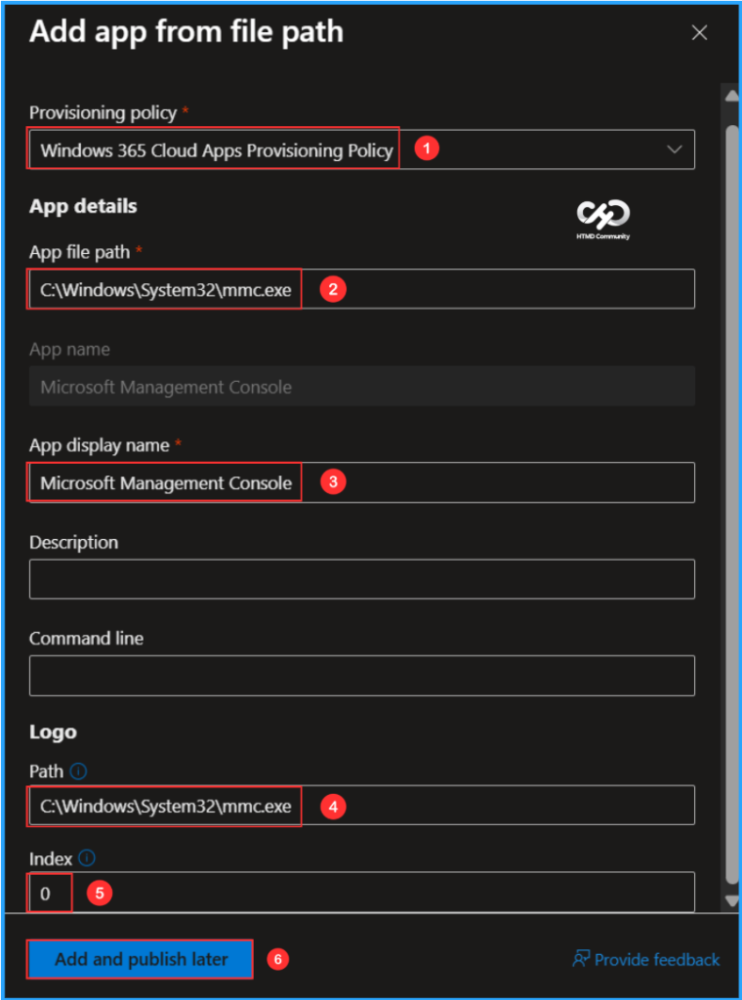
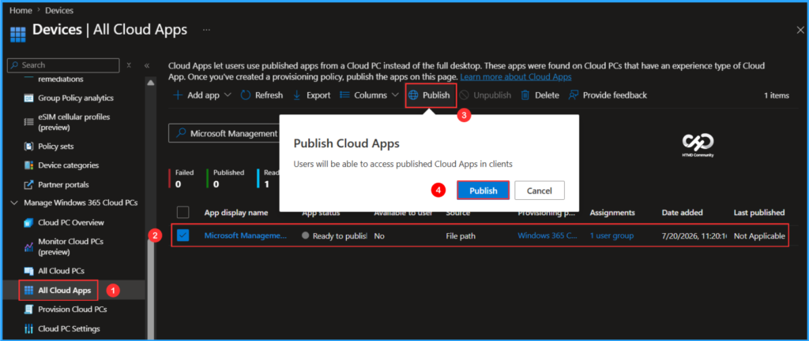
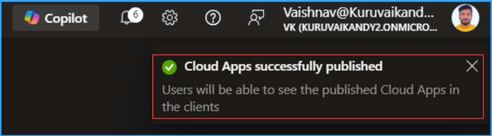
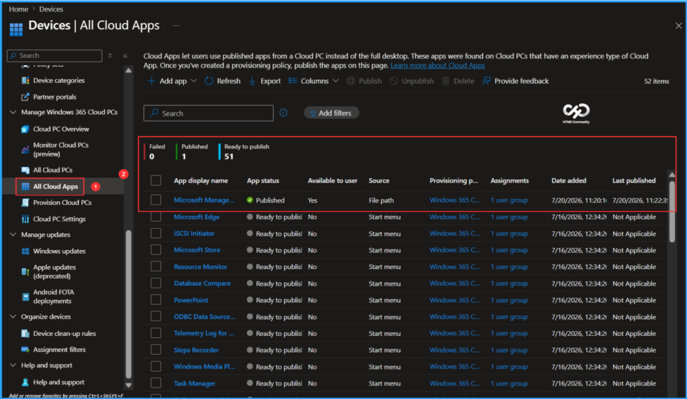
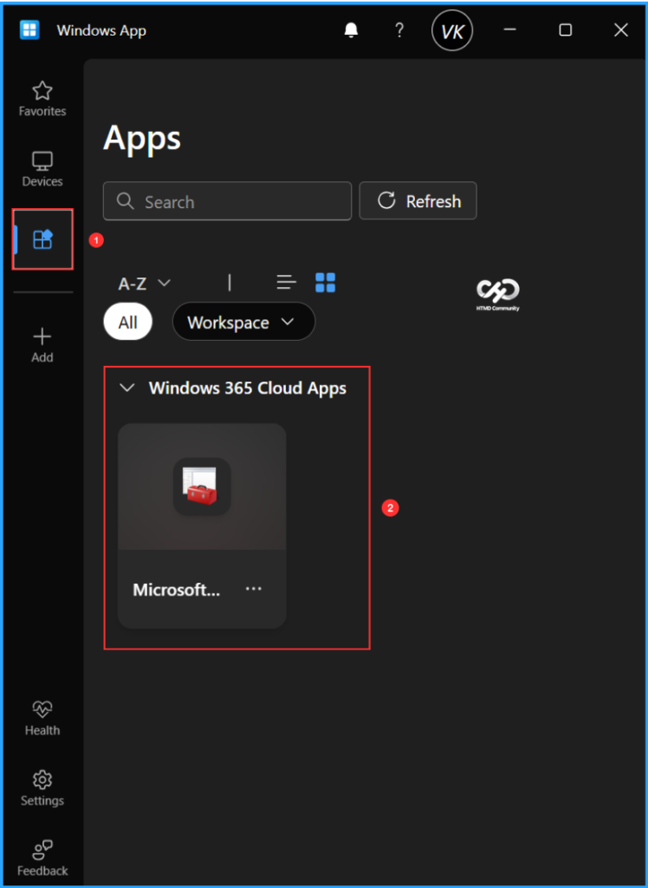
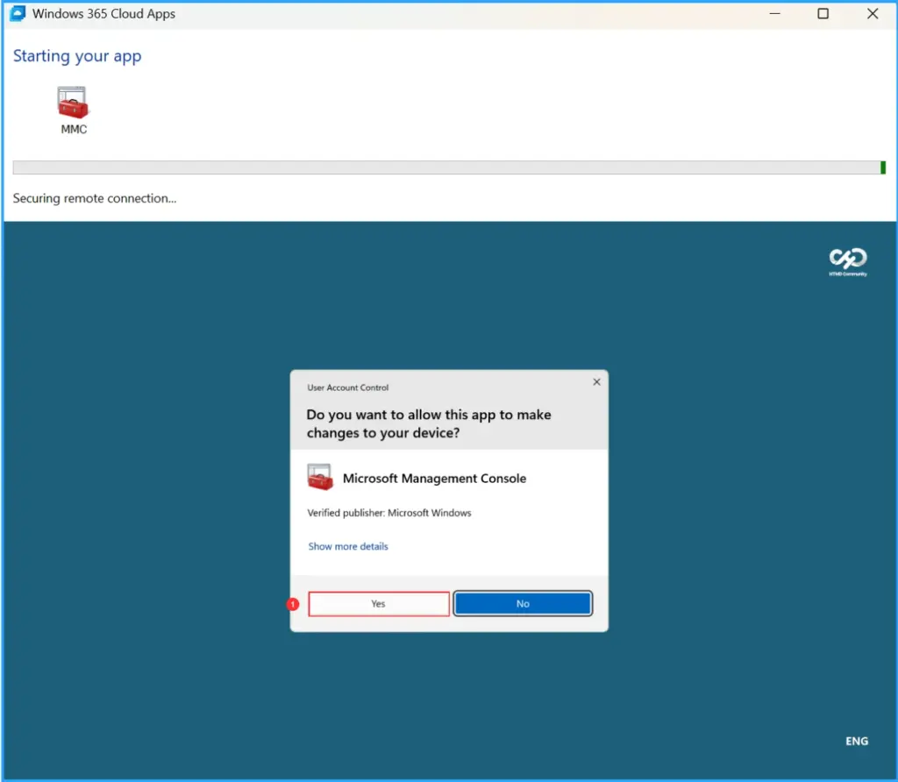

Key Takeaways
- Requires Windows 365 Flex licenses, as Cloud Apps are currently supported only on Windows 365 Flex Shared Cloud PCs.
- Customize app details such as display name, description, command-line parameters, icon path, and icon index.
- Manually add Cloud Apps using an application’s executable file path, including legacy apps and apps not discovered from the Start Menu.
- Built-in validation helps detect invalid file or icon paths, and apps can be edited or deleted at any time.
In this article, I’ll explain how to add Windows 365 Apps from a file path using Microsoft Intune. Windows 365 admins can now manually add Cloud Apps by specifying an application’s executable file path. This Public Preview feature allows admins to publish apps that don’t appear in the Start Menu, giving them greater flexibility when delivering applications to Windows 365 Flex Shared Cloud PCs. It also supports creating multiple app entries, customizing app properties, and configuring command-line parameters to meet different deployment needs.
Table of Content
Add Cloud Apps from File Path
The table below explains how to add, validate, edit, and delete Windows 365 Cloud Apps using a file path, and what happens to these apps after Cloud PC reprovisioning.
| Feature | Description |
|---|---|
| Add Cloud Apps from File Path | Manually publish applications by providing the executable file path. You can configure the file path, app name, display name, description, command-line arguments, icon path, and icon index for applications available on Cloud PCs. This is useful for legacy applications, apps not detected from the Start Menu, or apps that require custom launch parameters. |
| Validate | Windows 365 validates the application and icon paths. If either path is incorrect, the Cloud App displays a Failed status so you can update the information and publish it again. |
| Edit | Modify any previously configured details, including the file path, display name, description, command-line parameters, icon path, and icon index. After saving the changes, review and republish the app so users receive the updated version. |
| Delete | Remove manually added Cloud Apps when they are no longer required. Deleted apps are removed from All Cloud Apps, can no longer be published, and disappear from the Windows App if they were previously published. |
| Reprovision Behavior | When Cloud PCs are reprovisioned, Windows 365 automatically rediscovers and republishes supported applications. Apps added through the file path method are revalidated and republished during the reprovisioning process. |
Create New Windows 365 Cloud Apps from File Path
To create a new Windows 365 Cloud App using file path, login to the Microsoft Intune Admin Center using your administrator credentials. Before you begin, if you are unfamiliar with creating Windows 365 Apps using Intune, I recommend reading my article, How to Set Up Windows 365 Cloud Apps Using Microsoft Intune. Create the apps and then follow the steps outlined below.
- Navigate to > Devices > Manage Windows 365 Cloud PCs > All Cloud Apps
- Click on +Add app > File path (Preview)

In the Add app from file path page, we need to select an app that is not available in the Gallery Image to add as a Cloud App. I will use Microsoft Management Console (MMC) as an example. Please fill in the details below, and then click “Add and publish later“.
- Provisioning policy: Windows 365 Cloud Apps Provisioning Policy (Already created Windows 365 Flex Shared Provisioning Policy)
- App file path: Microsoft Management Console
- App name: Microsoft Management Console
- App display name: Microsoft Management Console
- Description: Optional
- Command line: Optional (If you need to add a specific command to run when the application launches, enter the command)
- Logo path: C:\Windows\System32\mmc.exe (Enter a local path of your icon file on the Cloud PCs)
- Index: 0 (Specify the index number of the icon you want to use)

The groups assigned to the Windows 365 Cloud Apps Provisioning Policy will be able to access Windows 365 Cloud Apps without needing individual Cloud PCs. To publish our new Microsoft Management Console Cloud Apps, follow the steps outlined below.
- Navigate to Devices > Manage Windows 365 Cloud PCs > All Cloud Apps. View the available apps, select Microsoft Management Console from the list, and click on Publish.

After clicking Publish, Intune will verify the configuration. If it’s set up correctly, you will receive a notification stating Cloud Apps successfully published. If the conditions are not met, it will throw an error like “Failed“.

Users will have access to the published Cloud App within their clients. The selected app, in this case, is the Microsoft Management Console (MMC), which has gone through the following status changes: from Ready to Publish to Publishing, and finally to Published. Additionally, you can see the Source of this particular app is a File path.
Note: If you want existing Cloud Apps provisioning policies to support APPX and MSIX applications, you must reprovision the Cloud PCs. Reprovisioning enables discovery of these applications. APPX and MSIX apps aren’t shown in the application preview during provisioning policy creation, but after reprovisioning they become available to publish from the All Cloud Apps page.

End User Experience of Windows 365 MMC Cloud App from File Path
It’s time to check out our new file path-based Windows 365 Microsoft Management Console Cloud App experience. You can use the Windows App or access the URL https://windows.cloud.microsoft.com through a web browser. Log in with your Windows 365 Cloud Apps user credentials (corporate credentials). In the Windows app, select the Apps tab to view all the published applications available to users, organized by the categories we created in Intune.

When you click on the three dots and select Connect, or double-click on the app, the Microsoft Management Console (MMC) App will launch. This will give you an experience similar to that of a locally installed application on your device. When you log in for the first time, you will see the hosted Cloud PC running in the background. However, this happens only once. After your first login, it will be seamless from the next time.

Need Further Assistance or Have Technical Questions?
Join the LinkedIn Page and Telegram group to get the latest step-by-step guides and news updates. Join our Meetup Page to participate in User group meetings. Also, join the WhatsApp Community to get the latest news on Microsoft Technologies. We are there on Reddit as well.
Author
Vaishnav K has over 12 years of experience in SCCM, Intune, Modern Device Management, and Automation Solutions. He writes and shares knowledge about Microsoft Intune, Windows 365, Azure, Entra, PowerShell Scripting, and Automation. Check out his profile on LinkedIn.